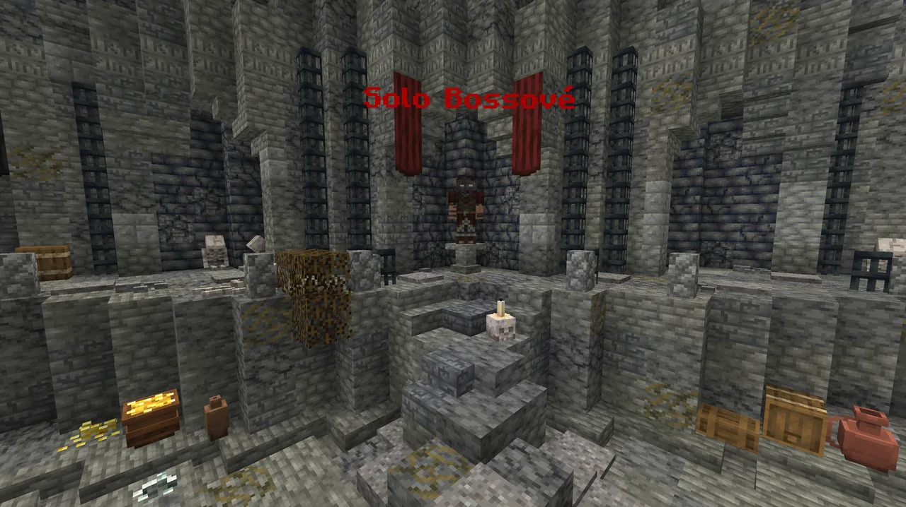
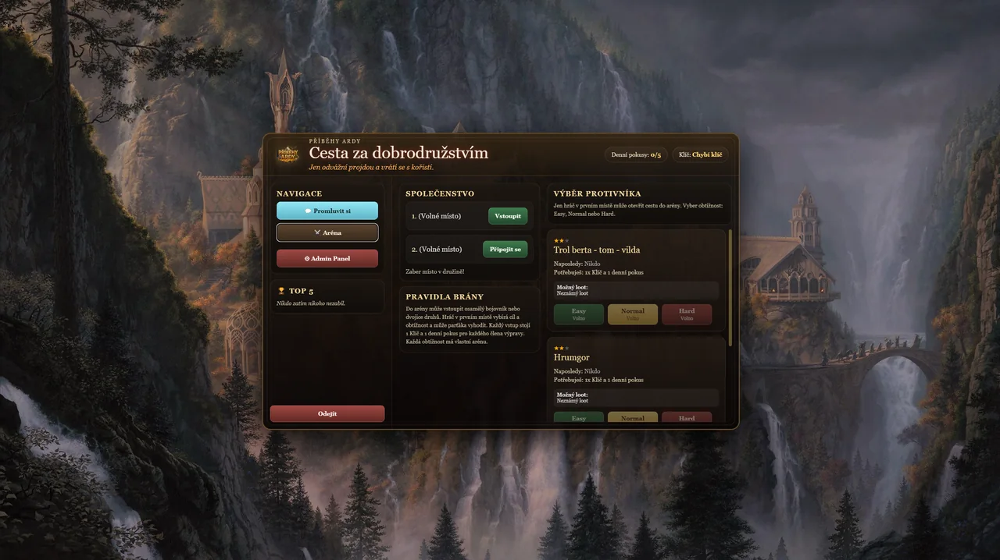

¶Solo Bossové
iSouboj s bossem můžeš podstoupit sám, nebo ve dvou. Každý boss má vlastní schopnosti a svoji arénu.

![OVĚŘIT] Kde přesně stojí NPC, které bossy otevírá. Původní wiki uváděla NPC Gói v cechovním domě lovců, na ostrém serveru se to ještě ověřuje.
¶Menu „Cesta za dobrodružstvím“
Klikni na NPC bossů a otevře se menu Cesta za dobrodružstvím s heslem „Jen odvážní projdou a vrátí se s kořistí“.

V menu najdeš:
- Denní pokusy (například 0 / 5) a pilulku s informací, jestli máš Klíč,
- Společenstvo se dvěma místy ([Volné místo], Připojit se, Odejít),
- Pravidla brány, Navigaci a žebříček TOP 5,
- Výběr protivníka s počtem hvězdiček obtížnosti, možným lootem a obtížnostmi Easy, Normal a Hard.
¶Pravidla
- Do arény může vstoupit osamělý bojovník, nebo dvojice. Hráč v prvním místě vybírá cíl a obtížnost a může parťáka vyhodit.
- Každý vstup stojí 1 Klíč a 1 denní pokus pro každého člena výpravy.
- Máš 5 pokusů denně. Pokusy se nulují o půlnoci.
- Každá obtížnost má vlastní arénu.
- Po vstupu je aréna zamčená, dokud boss nepadne, nejdéle však 5 minut.
iDo soubojů se důrazně doporučuje brát štít. Každý boss má svou mapu a specifické mechaniky.
¶Klíč
Do arény potřebuješ Klíč. Není garantovaným dropem, jeho získání je věcí šance.
![OVĚŘIT] Z čeho přesně se Klíč získává (původní wiki uváděla questy a zvířata).
¶Bossové
V nabídce menu najdeš bosse Trol berta - tom - vilda, Hrumgor, Eryndor, Ghorzak, Marzog a Shelob.
![OVĚŘIT] Aktuální seznam bossů na ostrém serveru a jejich odměny. Původní wiki uváděla Guu Troll, Snow Troll, Spider Matriarch, Wright, Giant Boar a Alpha Warg.
¶Odměny
Z bosse dostaneš náhodný loot. U každého protivníka vidíš v menu, co může padnout.
© Všechna práva vyhrazena tvůrcům módů, naším výtvorem je pouze zprostředkování serveru. Nejedná se o oficiální produkt Minecraftu. Nejsme spojeni s Mojang Studios.